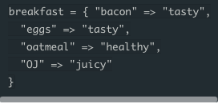

7 Dec 2015
Arrays and Hashes
For whatever reason, Hashes remind me of those SAT analogy questions. The ones where you're given one pair of words and have to find pick another pair of words that have a similar relationship like the first pair. Even though this isn't really how hashes work i think just the way those sat questions were written reminds me of them.


Anyways Arrays and hashes are very similar to each other, but have some key differences. They both store values associated with an index/key that allows the user to recall the specific value. The array associates these different values to an index, starting from 0 and counting up. A hash on the other hand stores the value with a user defined key. This key can be pretty much anything the coder wants to use. Another way to think about this is a shopping list. If you were to make a shopping list for groceries you would probably use numbers next to each item you want to buy. This would be like an array. A hash on the other hand could replace those numbers next to each item with anything you wanted to use to keep track of the list.

In this example milk, eggs, and bacon can be accessed from the array using the index starting with 0, 1, and 2. In the Hash I associated 3 keys (cow, chicken, pig) to the 3 values so that I can use those to recall them instead.
So why use hashes if arrays do the same thing? Suppose you needed to store the information of 3 people. Specifically their name, age, and favorite food. It would be really hard to store all that information in one array and remember which index number goes to each piece of information. With a hash you could associate the information with easy to remember keys. Like the following:
people = {
'name1' => 'Chris'
'name2' => 'Jill'
'name3' => 'Ben'
'age1' => '45'
'age2' => '23'
'age3' => '34'
'food1' => 'pizza'
'food2' => 'ribs'
'food3' => 'sushi'
}